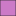
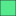
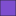
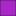
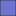
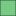
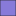
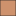
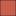
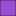

<!doctype html>
<html lang="en">
    <head>
        <meta charset="utf-8">
        <meta http-equiv="X-UA-Compatible" content="IE=edge">
        <meta name="viewport" content="initial-scale=1,user-scalable=no,maximum-scale=1,width=device-width">
        <meta name="mobile-web-app-capable" content="yes">
        <meta name="apple-mobile-web-app-capable" content="yes">
        <link rel="stylesheet" href="css/leaflet.css">
        <link rel="stylesheet" href="css/qgis2web.css"><link rel="stylesheet" href="css/fontawesome-all.min.css">
        <link rel="stylesheet" href="css/leaflet-measure.css">
        <style>
        html, body, #map {
            width: 100%;
            height: 100%;
            padding: 0;
            margin: 0;
        }
        </style>
        <title></title>
    </head>
    <body>
        <div id="map">
        </div>
        <script src="js/qgis2web_expressions.js"></script>
        <script src="js/leaflet.js"></script>
        <script src="js/leaflet.rotatedMarker.js"></script>
        <script src="js/leaflet.pattern.js"></script>
        <script src="js/leaflet-hash.js"></script>
        <script src="js/Autolinker.min.js"></script>
        <script src="js/rbush.min.js"></script>
        <script src="js/labelgun.min.js"></script>
        <script src="js/labels.js"></script>
        <script src="js/leaflet-measure.js"></script>
        <script src="data/Geology_OffshoreCoalOilPoint_1.js"></script>
        <script src="data/Isopachs_SantaBarbaraChannel_2.js"></script>
        <script src="data/Contours_OffshoreCoalOilPoint_3.js"></script>
        <script>
        var map = L.map('map', {
            zoomControl:true, maxZoom:28, minZoom:1
        }).fitBounds([[34.29541612169486,-120.11417585869638],[34.5025274474098,-119.68604320962518]]);
        var hash = new L.Hash(map);
        map.attributionControl.setPrefix('<a href="https://github.com/tomchadwin/qgis2web" target="_blank">qgis2web</a> &middot; <a href="https://leafletjs.com" title="A JS library for interactive maps">Leaflet</a> &middot; <a href="https://qgis.org">QGIS</a>');
        var autolinker = new Autolinker({truncate: {length: 30, location: 'smart'}});
        var measureControl = new L.Control.Measure({
            position: 'topleft',
            primaryLengthUnit: 'meters',
            secondaryLengthUnit: 'kilometers',
            primaryAreaUnit: 'sqmeters',
            secondaryAreaUnit: 'hectares'
        });
        measureControl.addTo(map);
        document.getElementsByClassName('leaflet-control-measure-toggle')[0]
        .innerHTML = '';
        document.getElementsByClassName('leaflet-control-measure-toggle')[0]
        .className += ' fas fa-ruler';
        var bounds_group = new L.featureGroup([]);
        function setBounds() {
        }
        map.createPane('pane_OpenStreetMap_0');
        map.getPane('pane_OpenStreetMap_0').style.zIndex = 400;
        var layer_OpenStreetMap_0 = L.tileLayer('https://tile.openstreetmap.org/{z}/{x}/{y}.png', {
            pane: 'pane_OpenStreetMap_0',
            opacity: 1.0,
            attribution: '',
            minZoom: 1,
            maxZoom: 28,
            minNativeZoom: 0,
            maxNativeZoom: 19
        });
        layer_OpenStreetMap_0;
        map.addLayer(layer_OpenStreetMap_0);
        function pop_Geology_OffshoreCoalOilPoint_1(feature, layer) {
            var popupContent = '<table>\
                    <tr>\
                        <td colspan="2">' + (feature.properties['OBJECTID'] !== null ? autolinker.link(feature.properties['OBJECTID'].toLocaleString()) : '') + '</td>\
                    </tr>\
                    <tr>\
                        <td colspan="2">' + (feature.properties['MapUnitAbb'] !== null ? autolinker.link(feature.properties['MapUnitAbb'].toLocaleString()) : '') + '</td>\
                    </tr>\
                    <tr>\
                        <td colspan="2">' + (feature.properties['MapUnit'] !== null ? autolinker.link(feature.properties['MapUnit'].toLocaleString()) : '') + '</td>\
                    </tr>\
                    <tr>\
                        <td colspan="2">' + (feature.properties['Label'] !== null ? autolinker.link(feature.properties['Label'].toLocaleString()) : '') + '</td>\
                    </tr>\
                    <tr>\
                        <td colspan="2">' + (feature.properties['IDConf'] !== null ? autolinker.link(feature.properties['IDConf'].toLocaleString()) : '') + '</td>\
                    </tr>\
                    <tr>\
                        <td colspan="2">' + (feature.properties['Pattern'] !== null ? autolinker.link(feature.properties['Pattern'].toLocaleString()) : '') + '</td>\
                    </tr>\
                    <tr>\
                        <td colspan="2">' + (feature.properties['DataSource'] !== null ? autolinker.link(feature.properties['DataSource'].toLocaleString()) : '') + '</td>\
                    </tr>\
                    <tr>\
                        <td colspan="2">' + (feature.properties['Notes'] !== null ? autolinker.link(feature.properties['Notes'].toLocaleString()) : '') + '</td>\
                    </tr>\
                    <tr>\
                        <td colspan="2">' + (feature.properties['GeologicAg'] !== null ? autolinker.link(feature.properties['GeologicAg'].toLocaleString()) : '') + '</td>\
                    </tr>\
                    <tr>\
                        <td colspan="2">' + (feature.properties['MapUnitDes'] !== null ? autolinker.link(feature.properties['MapUnitDes'].toLocaleString()) : '') + '</td>\
                    </tr>\
                    <tr>\
                        <td colspan="2">' + (feature.properties['FC_ID'] !== null ? autolinker.link(feature.properties['FC_ID'].toLocaleString()) : '') + '</td>\
                    </tr>\
                    <tr>\
                        <td colspan="2">' + (feature.properties['Shape_Leng'] !== null ? autolinker.link(feature.properties['Shape_Leng'].toLocaleString()) : '') + '</td>\
                    </tr>\
                    <tr>\
                        <td colspan="2">' + (feature.properties['Shape_Area'] !== null ? autolinker.link(feature.properties['Shape_Area'].toLocaleString()) : '') + '</td>\
                    </tr>\
                </table>';
            layer.bindPopup(popupContent, {maxHeight: 400});
        }

        function style_Geology_OffshoreCoalOilPoint_1_0(feature) {
            switch(String(feature.properties['MapUnit'])) {
                case 'active marine nearshore and shelf sediments':
                    return {
                pane: 'pane_Geology_OffshoreCoalOilPoint_1',
                opacity: 1,
                color: 'rgba(35,35,35,1.0)',
                dashArray: '',
                lineCap: 'butt',
                lineJoin: 'miter',
                weight: 1.0, 
                fill: true,
                fillOpacity: 1,
                fillColor: 'rgba(76,230,68,1.0)',
                interactive: true,
            }
                    break;
            }
        }
        map.createPane('pane_Geology_OffshoreCoalOilPoint_1');
        map.getPane('pane_Geology_OffshoreCoalOilPoint_1').style.zIndex = 401;
        map.getPane('pane_Geology_OffshoreCoalOilPoint_1').style['mix-blend-mode'] = 'normal';
        var layer_Geology_OffshoreCoalOilPoint_1 = new L.geoJson(json_Geology_OffshoreCoalOilPoint_1, {
            attribution: '',
            interactive: true,
            dataVar: 'json_Geology_OffshoreCoalOilPoint_1',
            layerName: 'layer_Geology_OffshoreCoalOilPoint_1',
            pane: 'pane_Geology_OffshoreCoalOilPoint_1',
            onEachFeature: pop_Geology_OffshoreCoalOilPoint_1,
            style: style_Geology_OffshoreCoalOilPoint_1_0,
        });
        bounds_group.addLayer(layer_Geology_OffshoreCoalOilPoint_1);
        map.addLayer(layer_Geology_OffshoreCoalOilPoint_1);
        function pop_Isopachs_SantaBarbaraChannel_2(feature, layer) {
            var popupContent = '<table>\
                    <tr>\
                        <td colspan="2">' + (feature.properties['ID'] !== null ? autolinker.link(feature.properties['ID'].toLocaleString()) : '') + '</td>\
                    </tr>\
                    <tr>\
                        <td colspan="2">' + (feature.properties['CONTOUR'] !== null ? autolinker.link(feature.properties['CONTOUR'].toLocaleString()) : '') + '</td>\
                    </tr>\
                </table>';
            layer.bindPopup(popupContent, {maxHeight: 400});
        }

        function style_Isopachs_SantaBarbaraChannel_2_0() {
            return {
                pane: 'pane_Isopachs_SantaBarbaraChannel_2',
                opacity: 1,
                color: 'rgba(255,0,0,1.0)',
                dashArray: '',
                lineCap: 'square',
                lineJoin: 'bevel',
                weight: 1.0,
                fillOpacity: 0,
                interactive: true,
            }
        }
        map.createPane('pane_Isopachs_SantaBarbaraChannel_2');
        map.getPane('pane_Isopachs_SantaBarbaraChannel_2').style.zIndex = 402;
        map.getPane('pane_Isopachs_SantaBarbaraChannel_2').style['mix-blend-mode'] = 'normal';
        var layer_Isopachs_SantaBarbaraChannel_2 = new L.geoJson(json_Isopachs_SantaBarbaraChannel_2, {
            attribution: '',
            interactive: true,
            dataVar: 'json_Isopachs_SantaBarbaraChannel_2',
            layerName: 'layer_Isopachs_SantaBarbaraChannel_2',
            pane: 'pane_Isopachs_SantaBarbaraChannel_2',
            onEachFeature: pop_Isopachs_SantaBarbaraChannel_2,
            style: style_Isopachs_SantaBarbaraChannel_2_0,
        });
        bounds_group.addLayer(layer_Isopachs_SantaBarbaraChannel_2);
        map.addLayer(layer_Isopachs_SantaBarbaraChannel_2);
        function pop_Contours_OffshoreCoalOilPoint_3(feature, layer) {
            var popupContent = '<table>\
                    <tr>\
                        <td colspan="2">' + (feature.properties['ID'] !== null ? autolinker.link(feature.properties['ID'].toLocaleString()) : '') + '</td>\
                    </tr>\
                    <tr>\
                        <td colspan="2">' + (feature.properties['CONTOUR'] !== null ? autolinker.link(feature.properties['CONTOUR'].toLocaleString()) : '') + '</td>\
                    </tr>\
                </table>';
            layer.bindPopup(popupContent, {maxHeight: 400});
        }

        function style_Contours_OffshoreCoalOilPoint_3_0() {
            return {
                pane: 'pane_Contours_OffshoreCoalOilPoint_3',
                opacity: 1,
                color: 'rgba(0,0,0,1.0)',
                dashArray: '',
                lineCap: 'square',
                lineJoin: 'bevel',
                weight: 1.0,
                fillOpacity: 0,
                interactive: true,
            }
        }
        map.createPane('pane_Contours_OffshoreCoalOilPoint_3');
        map.getPane('pane_Contours_OffshoreCoalOilPoint_3').style.zIndex = 403;
        map.getPane('pane_Contours_OffshoreCoalOilPoint_3').style['mix-blend-mode'] = 'normal';
        var layer_Contours_OffshoreCoalOilPoint_3 = new L.geoJson(json_Contours_OffshoreCoalOilPoint_3, {
            attribution: '',
            interactive: true,
            dataVar: 'json_Contours_OffshoreCoalOilPoint_3',
            layerName: 'layer_Contours_OffshoreCoalOilPoint_3',
            pane: 'pane_Contours_OffshoreCoalOilPoint_3',
            onEachFeature: pop_Contours_OffshoreCoalOilPoint_3,
            style: style_Contours_OffshoreCoalOilPoint_3_0,
        });
        bounds_group.addLayer(layer_Contours_OffshoreCoalOilPoint_3);
        map.addLayer(layer_Contours_OffshoreCoalOilPoint_3);
        var baseMaps = {};
        L.control.layers(baseMaps,{'  Contours_OffshoreCoalOilPoint': layer_Contours_OffshoreCoalOilPoint_3,'  Isopachs_SantaBarbaraChannel': layer_Isopachs_SantaBarbaraChannel_2,' Geology_OffshoreCoalOilPoint<br /><table><tr><td style="text-align: center;"></td><td>active marine nearshore and shelf sediments</td></tr><tr><td style="text-align: center;"></td><td>active marine nearshore and shelf sediments - FINE</td></tr><tr><td style="text-align: center;"></td><td>area of brighter backscatter and no relief</td></tr><tr><td style="text-align: center;"></td><td>area of low relief, bright backscatter</td></tr><tr><td style="text-align: center;"></td><td>bright BS, relief, smooth, similar to nearby features jamie mapped</td></tr><tr><td style="text-align: center;"></td><td>dashed line in Jamie\'s map - small portion of lg area of high BS</td></tr><tr><td style="text-align: center;"></td><td>from Jamie\'s map (edited by AR)</td></tr><tr><td style="text-align: center;"></td><td>from Jamie\'s map (except E side</td></tr><tr><td style="text-align: center;"></td><td>Goleta slide complex units</td></tr><tr><td style="text-align: center;"></td><td>jamie has mapped as dashed lines. seep in ofr. bright in BS</td></tr><tr><td style="text-align: center;"></td><td>Jamie mapped as dashed lines</td></tr><tr><td style="text-align: center;"></td><td>jamie mapped as dashed lines, i assumed is bathy and BS anomaly</td></tr><tr><td style="text-align: center;"></td><td>Jamie\'s map</td></tr><tr><td style="text-align: center;"></td><td>Jamie\'s Map</td></tr><tr><td style="text-align: center;"></td><td>Jamie\'s Map - perpendicular to shore - fan</td></tr><tr><td style="text-align: center;"></td><td>Modified per Jamie\'s map - nearshore brighter BS, some relief, some not, Also patchy bright to E</td></tr><tr><td style="text-align: center;"></td><td>Monterey formation</td></tr><tr><td style="text-align: center;"></td><td>per Jamie\'s map - maybe dissolve my inner polys?</td></tr><tr><td style="text-align: center;"></td><td>platform debris</td></tr><tr><td style="text-align: center;"></td><td>Platform Holly - also dashed on Jamie\'s map</td></tr><tr><td style="text-align: center;"></td><td>pockmark</td></tr><tr><td style="text-align: center;"></td><td>pockmarks</td></tr><tr><td style="text-align: center;"></td><td>Quaternary sediment - cobble or conglomerate</td></tr><tr><td style="text-align: center;"></td><td>rincon - beds show in 2004 photos</td></tr><tr><td style="text-align: center;"></td><td>rough and bright</td></tr><tr><td style="text-align: center;"></td><td>rougher, brighter, per Jamie mtg</td></tr><tr><td style="text-align: center;"></td><td></td></tr></table>': layer_Geology_OffshoreCoalOilPoint_1,"OpenStreetMap": layer_OpenStreetMap_0,},{collapsed:false}).addTo(map);
        setBounds();
        </script>
    </body>
</html>
